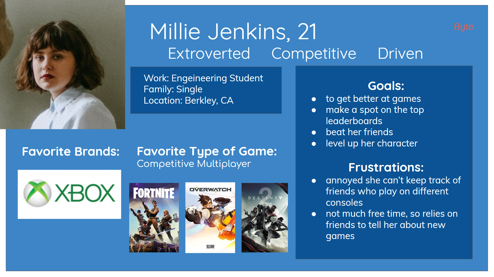

An app to organize and condense all your video games to one location, and compare your progress and achievements with your friends, across all platforms.
Project Overview
My Role:
UX/UI Research and Design
Tools Used:
Adobe Illustrator, Adobe XD, Miro, InVision
Time Frame:
3 weeks, April 2019
Research
The problem we saw is that gaming is growing. It's no longer a niche hobby, especially with the advent of smart phones. But as the market grows, so does the number of platforms. Social Interaction has become a huge part of gaming as multiplayer games have grown in scope and popularity.
Key Insights from Interviews & Survey
- Gamers have games and wishlists spread across multiple platforms and storefronts and nowhere to see all their games in one spot.
- Many have friends who play the same games on different platforms and have no way to compare scores and achievements.
- It is difficult to trust reivews because of credibility and trolls.
Affinity Diagram

Define
Problem Statement
Video game players have difficulty keeping up with the games they want to purchase. Our app would alleviate that by visualizing games, both physical and digtial, across all platforms, that gamers have played, purchased, and wish to buy on a virtual shelf. Our app would also offer reliable recommendations bassed-off users' favorite games and also notifications when games that they are interested in are on sale and where to purchase them.
Personas
Storyboard
User Flow
Testing
User Feedback
- The first prototype was bare-bones and mostly focused on discovery - shelves and recomendations. It was intuitive, but didn't stand out from any other platforms' or storefronts' wishlist.
- For the second prototype, we added a social component, platform intergration, and a tutorial, but our design lost it's cohesion and focus, confusing users.
- The third and final prototype (showcased above), we decided to focus on the shelves as the central feature of the app: everything would be centered around them. We made the shelves the homepage and the social feed, recommendations, ect. would branch off from there. The shelves would imitate real life storage, so that users could intuitively figure out how to use the app. This design combined the friendliness of the first design with all the neat ideas of the second.
Design
Style Tile
Mockups
Looking Forward
- Continue testing the high fidelity design
- Supply links to storefronts, game prices, and alerts when a game goes on sale
- Gamify achievements to encourage users to add games and update achievements
- Add allow users to also keep track board games and tabletop RPGs like Dungeons and Dragons